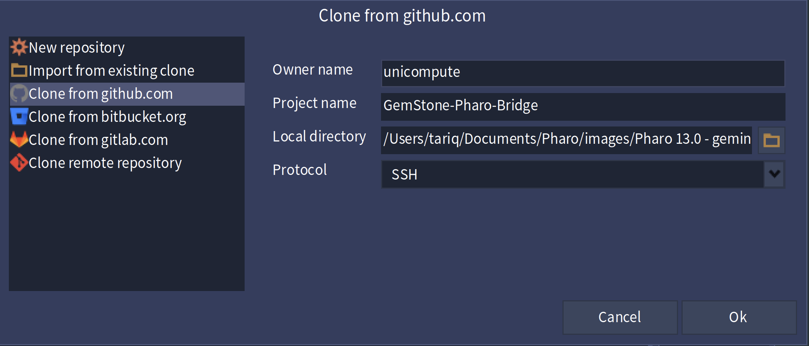

Practical guide for installing the bridge, connecting to GemStone, and using the Session Browser, GemStone Browser, Workspace, Symbol List Browser, Remote Debugger, connectors, and support tools.
GemStone-Pharo-Bridge gives Pharo a user-facing toolset for logging into GemStone and working with GemStone objects and code from a Pharo UI. The codebase is split into a Smalltalk-first core and optional MagLev/Ruby extension packages.
| Load group | What it contains | Typical use |
|---|---|---|
Original |
GemStone-GBS-Converted, GemStone-GBS-Tools |
original/base production packages only |
Original-Tests |
GemStone-GBS-Converted, GemStone-GBS-Tools, GemStone-Pharo-Tests |
original/base production packages plus the original/base test layer |
Core |
GemStone-GBS-Converted, GemStone-GBS-Core |
Smalltalk core bridge only |
Core-Tests |
GemStone-GBS-Converted, GemStone-GBS-Core, GemStone-GBS-Tools, GemStone-GBS-Core-Tools, GemStone-Pharo-Core-Tests |
Smalltalk core, generic tool overlays, and the core-only test suite |
MagLev |
GemStone-GBS-Converted, GemStone-GBS-Core, GemStone-GBS-Tools, GemStone-GBS-Core-Tools, GemStone-GBS-MagLev, GemStone-GBS-MagLev-Tools |
convenience alias for the MagLev production stack |
Tests |
GemStone-Pharo-Tests, GemStone-Pharo-Core-Tests, GemStone-Pharo-MagLev-Tests |
convenience alias for all active core and MagLev-aware test packages |
default |
GemStone-GBS-Converted, GemStone-GBS-Core, GemStone-GBS-MagLev, GemStone-GBS-Tools, GemStone-GBS-Core-Tools, GemStone-GBS-MagLev-Tools, GemStone-Pharo-Tests, GemStone-Pharo-Core-Tests, GemStone-Pharo-MagLev-Tests |
alias for `Full` |
A generated switch matrix is also available at doc/LOAD-MATRIX.md for the base/original, core, and MagLev load combinations.
The active core root API is bridgeRoot, backed by #GbsBridgeRoot and GbsBridgeRootFacade.
The bridge centers around these user tools:
UserGlobalsBefore loading the bridge, make sure you have the following in place:
Session profiles support the usual connection settings and a set of advanced fields. The current bridge
initializes new profiles with a default stone name of gs64stone and a default service of
gemnetobject.
If the repository is already cloned locally, loading from the local Tonel repository is the simplest path.
Metacello new
baseline: 'GemStonePharo';
repository: 'tonel:///path/to/GemStone-Pharo-Bridge/src';
load: #('Core-Tests').For the full interactive toolset, including MagLev/Ruby extensions when present:
Metacello new
baseline: 'GemStonePharo';
repository: 'tonel:///path/to/GemStone-Pharo-Bridge/src';
load."Runtime only"
Metacello new
baseline: 'GemStonePharo';
repository: 'tonel:///path/to/GemStone-Pharo-Bridge/src';
load: #('Core').
"Smalltalk core plus generic tools and Smalltalk-only tests"
Metacello new
baseline: 'GemStonePharo';
repository: 'tonel:///path/to/GemStone-Pharo-Bridge/src';
load: #('Core-Tests').
"Compatibility-only alias coverage"
Metacello new
baseline: 'GemStonePharo';
repository: 'tonel:///path/to/GemStone-Pharo-Bridge/src';
load: #('Compatibility-Tests').
"Optional MagLev/Ruby layer"
Metacello new
baseline: 'GemStonePharo';
repository: 'tonel:///path/to/GemStone-Pharo-Bridge/src';
load: #('MagLev').
"Full developer load"
Metacello new
baseline: 'GemStonePharo';
repository: 'tonel:///path/to/GemStone-Pharo-Bridge/src';
load.The baseline runs pre-load and post-load hooks that remove and re-apply runtime and tools overrides. If you are reloading the bridge during development, this is expected behavior.
Iceberg is a good fit for this project. The repository already contains the metadata Iceberg expects for a Tonel project:
.project with srcDirectory = srcsrc/.properties with #format : #tonel
doc/iceberg.png.If the repository is private, Iceberg still needs valid GitHub credentials. In practice that usually means:
After loading a tools-capable group such as Core-Tests, MagLev, or default, open the tools from the World menu:
World menu → GemStoneThe current menu structure is:
GbsSessionBrowserPresenter new open.
GbsWorkspace new open.
GbsRemoteTranscript new open.The Session Browser is the normal starting point. It shows two lists: a parameter list of saved connection profiles and a session list of active or remembered sessions.
| Control | Purpose |
|---|---|
Add... |
Create a new connection profile |
Copy |
Duplicate a selected profile |
Edit... |
Edit the selected profile |
Delete |
Remove the selected profile |
Login Link / Login RPC |
Log in using the selected profile |
Current |
Mark the selected session as the current session |
Commit |
Commit the current transaction |
Abort |
Abort the current transaction |
Begin |
Begin a GemStone transaction |
Break |
Issue a break command to the session |
Logout |
Log out the selected session |
Add... and create a connection profile.Login RPC.Current.
The Workspace, Browser, Transcript, and many menu commands operate on
GbsSessionParameters currentSession. If a tool appears to use the wrong session,
set the intended session current in the Session Browser and try again.
The GemStone Browser is the main code browser for server-side GemStone classes and methods. It opens on the current connected session and displays:
The GemStone Workspace is the easiest place to evaluate code against the current session. It is optimized for one-off execution, print-it style evaluation, inspection, commit, abort, and debugger entry on errors.
| Action | Effect |
|---|---|
Execute in GemStone |
Runs the selection or entire workspace in GemStone |
Commit |
Commit the current transaction |
Abort (Sync) |
Abort changes and sync with the latest GemStone state |
Print It |
Appends the printed result into the editor |
Inspect It |
Inspects the resulting remote object |
GS File It In |
Executes the selected source as a GemStone file-in |
Cmd+G or Ctrl+G: execute in GemStoneCmd+D: do itCmd+P: print it1 + 1
"should execute successfully"
1 / 0
"should open the GemStone remote debugger"
When execution raises a GbsError with remote process metadata,
the workspace opens the remote debugger automatically instead of only showing an alert.
The Symbol List Browser is the right tool for working with symbol dictionaries and globals such as
UserGlobals. It is distinct from the regular browser:
UserGlobals for the current GemStone userprintStringThe current build supports structured inspection:
Use the Symbol List Browser when you need to answer questions like:
“What is actually stored in UserGlobals?”
or “What keys exist in this application dictionary?”
The Remote Debugger is the bridge’s Pharo-side UI for suspended GemStone execution. It is opened from the workspace on errors or explicitly through service code.
The debugger also supports accepting source edits. If recompilation succeeds, it refreshes the stack and source view. If recompilation fails, the source pane shows the compile error state.
The test directory already suggests a useful smoke-test set:
1 + 1
1 / 0
| a b | a := 10. b := 0. a / b.
Object thisMessageDoesNotExistConnector tools control how local Pharo-side objects and GemStone-side classes are mapped and synchronized. This is an advanced feature, but it is exposed directly from the GemStone menu.
If you are not actively customizing replication or connector behavior, you can ignore this tool initially. For advanced bridge work, it is the main place to inspect and tune connector mappings.
The remote transcript window drains transcript output from the current session and mirrors it into a Pharo window and the local Pharo transcript. This is useful when you want remote logging without switching tools.
GbsRemoteTranscript new open.The GemStone menu includes direct entry points for:
Use these only with appropriate GemStone permissions. The menu entries assume a connected session and will fail or inform if there is no current login.
The bridge also exposes support utilities such as:
The repository includes both Smalltalk test packages and shell/Smalltalk scripts for regression workflows.
The current bridge keeps a small steady-state verification surface:
core-only: Verify the Smalltalk core without optional MagLev production packages and without deleted legacy surface.bootstrap-smoke: Prove that a clean image can micro-bootstrap the helper package and load the requested group before post-load checks run.original: Verify that the original/base production layer reloads cleanly without the generic Core or optional MagLev overlays.original-drift: Verify that the original/base production layer stays clean relative to `56b6db3...`, allowing only the explicit accepted test-layer exceptions.original-tests: Verify the original/base production and original/base test layer without the generic Core or optional MagLev overlays. This lane proves the base unit layer only.full: Verify the steady-state developer load plus the live GemStone lane.artifact-freshness: Verify that the generated contract artifacts and marker-managed doc sections are already up to date.verify: Run core-only, bootstrap-smoke, original, original-drift, original-tests, full, artifact-freshness, then the summary-renderer smoke check.make original-drift reports the original/base production layer as clean and currently accepts only these test-layer exceptions:
src/GemStone-Pharo-Tests/GciError.extension.st: Adds a tiny test-only GciError number accessor shim so the restored base login-error path can run without production drift.src/GemStone-Pharo-Tests/MockGbsSession.class.st: Keeps only a narrow interpretLoginError override so the restored base GbsSession production file stays clean.
The contract generates a human-facing steady-state operator reference at
doc/USER-MANUAL-REFERENCE.html. Use that file as the authoritative quick reference for
active load groups, verification lanes, live GemStone environment variables, the
bridgeRoot API, and the no-compatibility proof.
A generated layered switch matrix is available at doc/LOAD-MATRIX.md.
make help
make original-drift
make core-only
make original
make original-tests
make full
make verify
make artifact-freshnessGS_USER='DataCurator' \
GS_PASS='swordfish' \
GS_NETLDI_HOST='localhost' \
GS_NETLDI_NAME_OR_PORT='50377' \
GEMSTONE='/Users/tariq/GemStone64Bit3.7.5-arm64.Darwin' \
make full
The clean reload lane proves that deleted legacy package, class, selector, and method-package
ownership surface stays absent from the image and the active source roots. If that proof fails,
the reload lane reports NO_COMPATIBILITY_PROOF_FAILED.
The tests/README.md file contains a focused manual checklist for the remote debugger.
It is a good first validation pass after a fresh load.
The scripts folder contains repeatable automation for tasks such as:
Many menu items require a current connected session. If a tool says there is no session:
Set the intended session as current in the Session Browser. The workspace and several browser commands prefer
GbsSessionParameters currentSession.
Not every GemStone-side failure produces walkable remote context metadata. Start with known debugger-opening
expressions such as 1 / 0 or a message-not-understood case and verify that you are logged in.
If Iceberg can see the repo but cannot fetch it, check your GitHub credentials. For a private repository, the most reliable path is usually:
Reload the baseline or run the appropriate clean reload script. The bridge applies runtime/tool overrides during load, so partial reloads can leave stale behavior if only some packages are refreshed.
GbsSessionBrowserPresenter new open.
GbsWorkspace new open.
GbsRemoteTranscript new open.Metacello new
baseline: 'GemStonePharo';
repository: 'tonel:///path/to/GemStone-Pharo-Bridge/src';
load: #('Core-Tests').GbsClassicLauncher browseSymbolListOnCurrentSession.
Use GemStone → Browse → Symbol List Browser, choose the current GemStone user, select
UserGlobals, and then inspect entries from there.
1 + 11 / 0UserGlobalsdoc/USER-MANUAL-REFERENCE.html. For deeper implementation detail, read the baseline, presenter
classes, and regression scripts in the repository alongside this document.